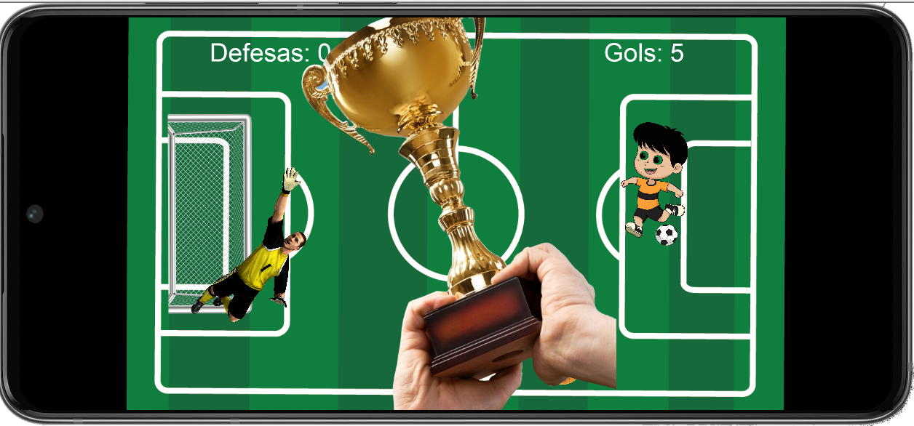
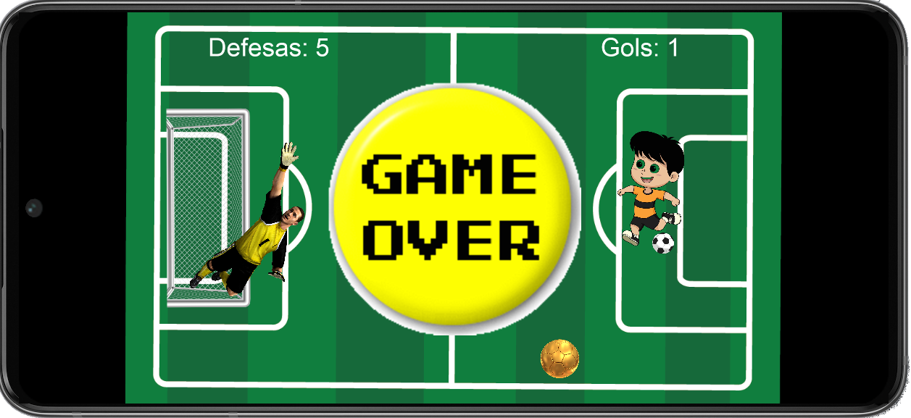
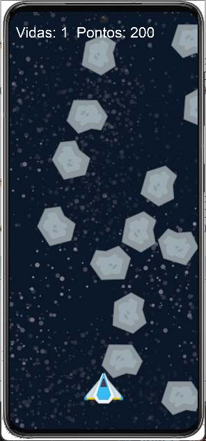

Abaixo estão listados os desafios realizados por mim durante o curso:
1 - Desafio criar um jogo com colisão:
Neste desafio foi solicitado criar um jogo utilizando as colisões aprendidas em aula.
O jogo criado consiste em um jogador chutando ao gol, quando o jogador marca 5 gols vence a partida, aparedendo um troféu na tela.
Caso o goleiro faça 5 defesas o jogo é encerrado aparecendo a mensagem de Game Over na tela.


Abaixo link para o GITHUB do projeto:
Desafio colisão LUA
2 - Jogo Star Explorer:
Neste projeto foi criado om jogo de nave espacial onde os meteóros apareccem aleatóriamento na tela e o jogagor precisa atirar o mais rápido possível para eliminá-los. A cada meteoro atingido é somado 100 pontos no placar.
Caso o meteóro atinja a Nave, o jogador perde uma vida. Ao zerar as vidas o jogo é encerrado e a mensagem de Game Over aparece na tela.

Abaixo link para o GITHUB do projeto:
Jogo Star Explorer
Voltar para a página inicial